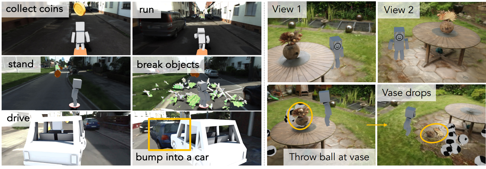

-
Anonymous Authors
Try Our Video2Game KITTI-360 Loop Demo Above!

Abstract
Creating high-quality and interactive virtual environments, such as games and simulators, often involves complex and costly manual modeling processes.
In this paper, we present Video2Game, a novel approach that automatically converts videos of real-world scenes into realistic and interactive game environments.
At the heart of our system are three core components:
(i) a neural radiance fields (NeRF) module that effectively captures the geometry and visual appearance of the scene;
(ii) a mesh module that distills the knowledge from NeRF for faster rendering;
and (iii) a physics module that models the interactions and physical dynamics among the objects.
By following the carefully designed pipeline, one can construct an interactable and actionable digital replica of the real world.
We benchmark our system on both indoor and large-scale outdoor scenes.
We show that we can not only produce highly-realistic renderings in real-time, but also build interactive games on top.
Gaming: Navigating in Gardenvase scene
Agents can navigate the area freely within the virtual environment where their actions follow real-world physics and are constrained by collision models. Also, players could also interact with extra inserted objects like footballs, all adhering to the physical law.
Gaming: Shooting in Gardenvase scene
For realistic shooting physics, we calculated the rigid-body collision dynamics for both the central vase and the surrounding scene, separated using mesh semantic filtering. We used a box collider for the vase and convex polygon colliders for the background. The player shoots footballs with a sphere collider at the vase on the table, causing it to fly off and fall to the ground.
Gaming: Collecting coins in KITTI-360 scene
The agent collects coins while running in the KITTI Loop composed of four streets in KITTI-360.
Gaming: Chair fracturing in KITTI-360 scene
Obstructive chairs on the road can be smashed thanks to pre-computed fracture animations.
Gaming: Car racing in KITTI-360 scene
The agent can also drive cars in the scene.
Gaming: Car crashing in KITTI-360 scene
The agent can also drive and push roadside vehicles existing in the scene forward by crashing into them. This interactivity is achieved through rigid-body dynamics simulation and collision modeling.
Robot Simulation: Stretch robot in VRNeRF scene
We demonstrate the potential of leveraging Video2Game for robot simulation using the VRNeRF dataset. We reconstruct the scene and segment simulatable rigid-body objects (e.g., the fruit bowl on the table). We show that a Stretch Robot is pushing the bowl off the table.
Robot Simulation: Fetch robot in VRNeRF scene
Utilizing PyBullet's integrated robotic inverse kinematics, we can effectively control the mechanical arms of the robots to interact with surrounding objects. For the Fetch Robot, we leverage the collision boxes specified in its URDF file. Our manipulation involves grasping the corresponding collision model of the central bowl on the table, eschewing the use of the magnetic gripper for object control. Subsequently, the robot lifts the bowl and relocates it to a different position.
Overall Pipeline
Given multiple posed images from a single video as input, we first construct a large-scale NeRF model that is realistic and possesses high-quality surface geometry. We then transform this NeRF model into a mesh representation with corresponding rigid-body dynamics to enable interactions. We utilize UV-mapped neural texture, which is both expressive and compatible with game engines. Finally, we obtain an interactive virtual environment that virtual actors can interact with, can respond to user control, and deliver high-resolution rendering from novel camera perspectives -- all in real-time.
Rigid-body dynamics
We equip every created physical entity with various physics-related attributes so that we can effectively model and simulate their physical dynamics. Here is the visualization of automatically computed collision geometry: Sphere collider (green), box collider (yellow), convex polygon collider (purple) and trimesh collider (red).